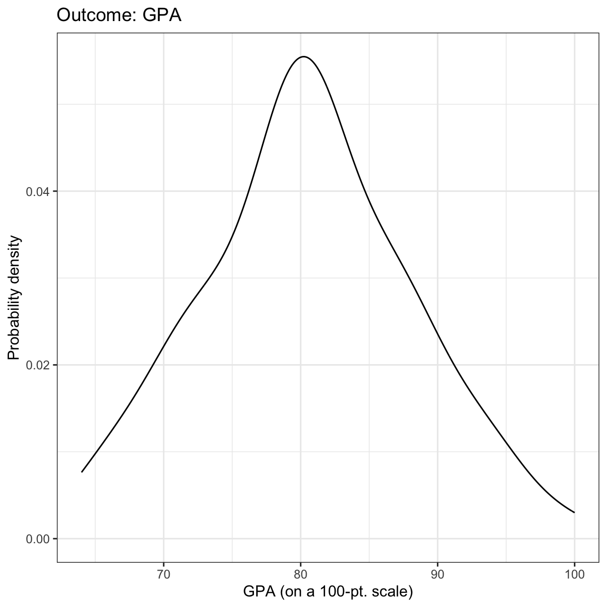
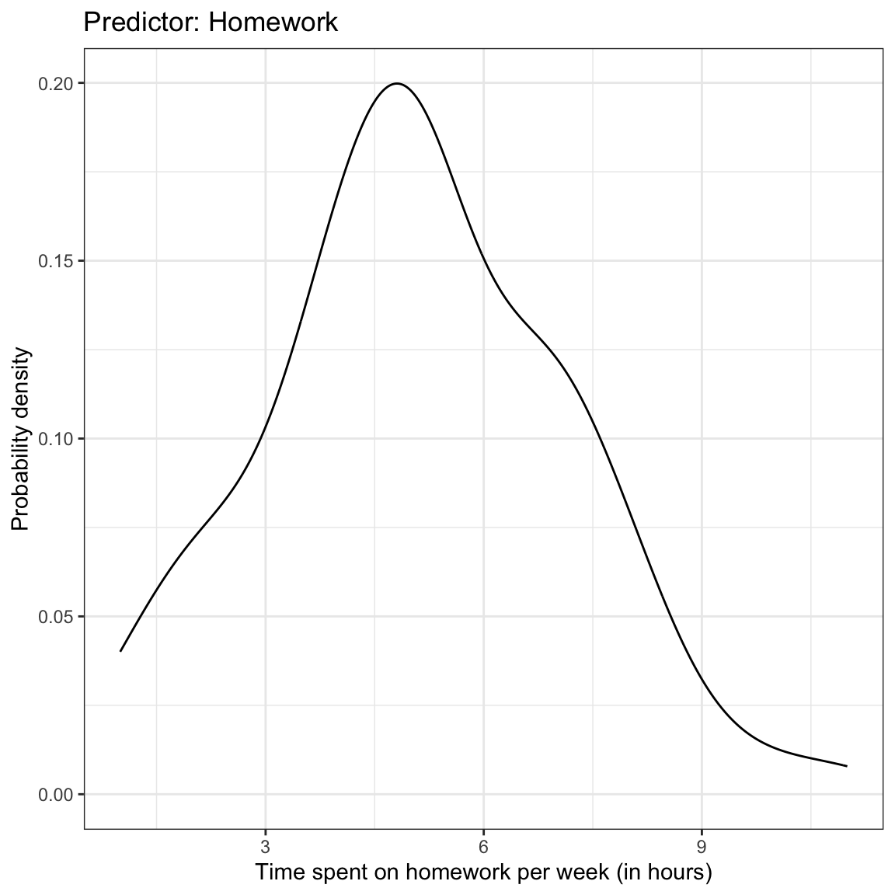
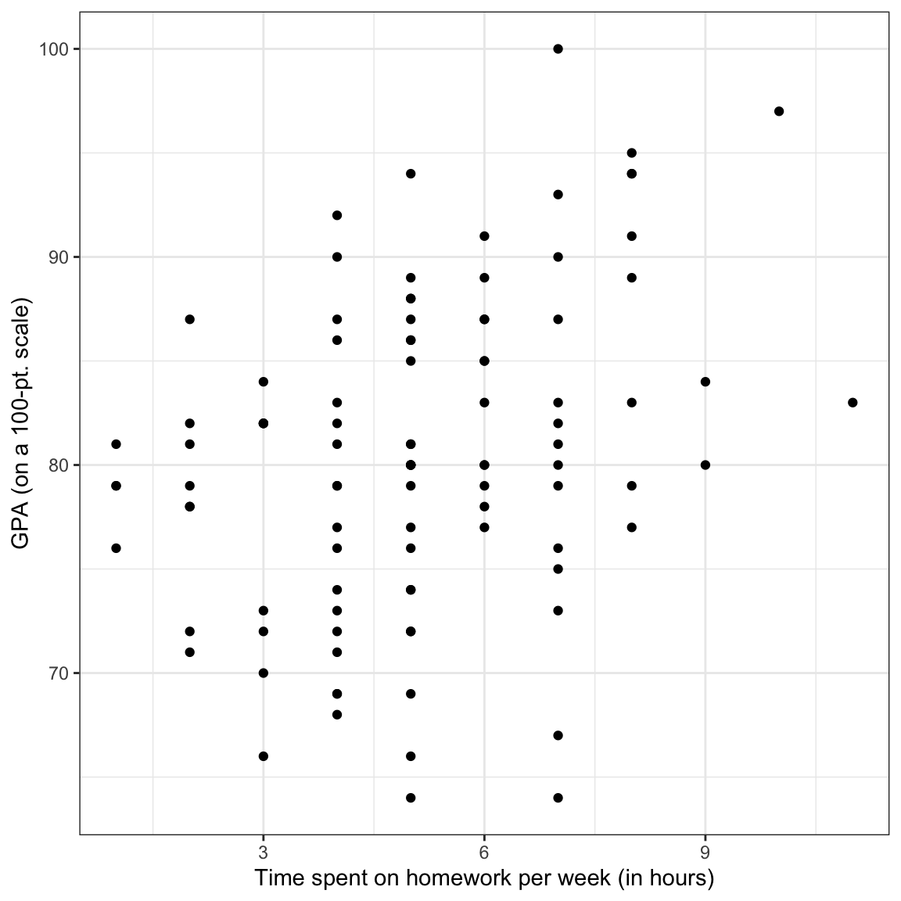
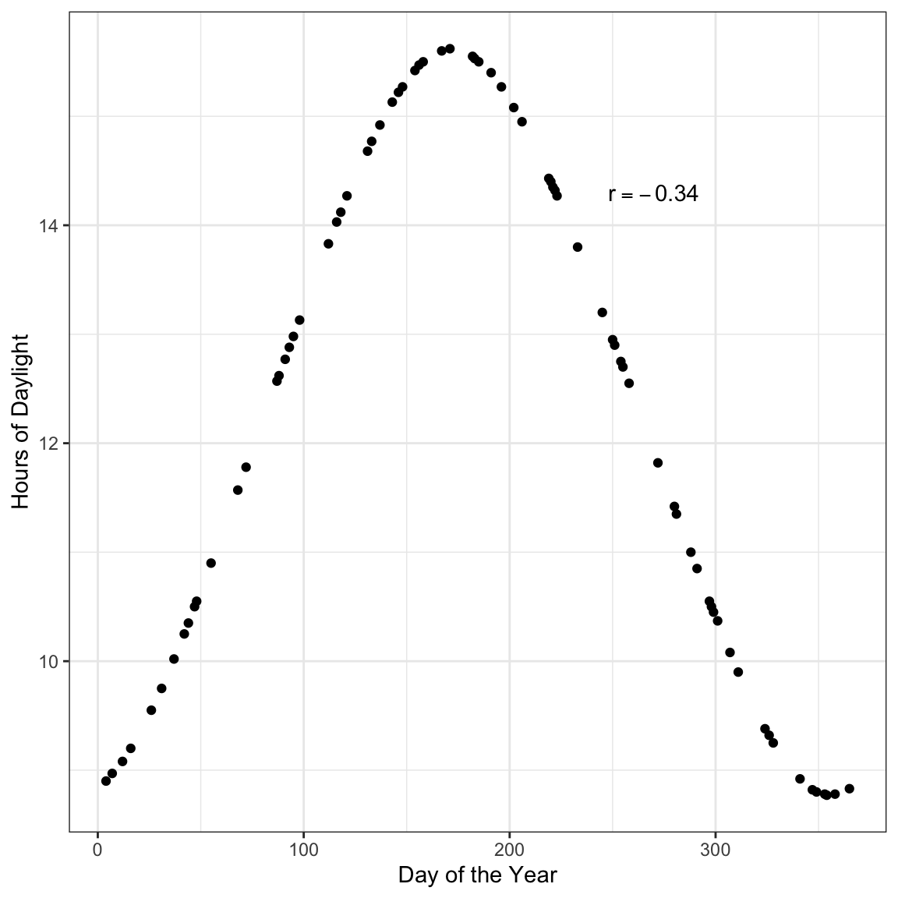
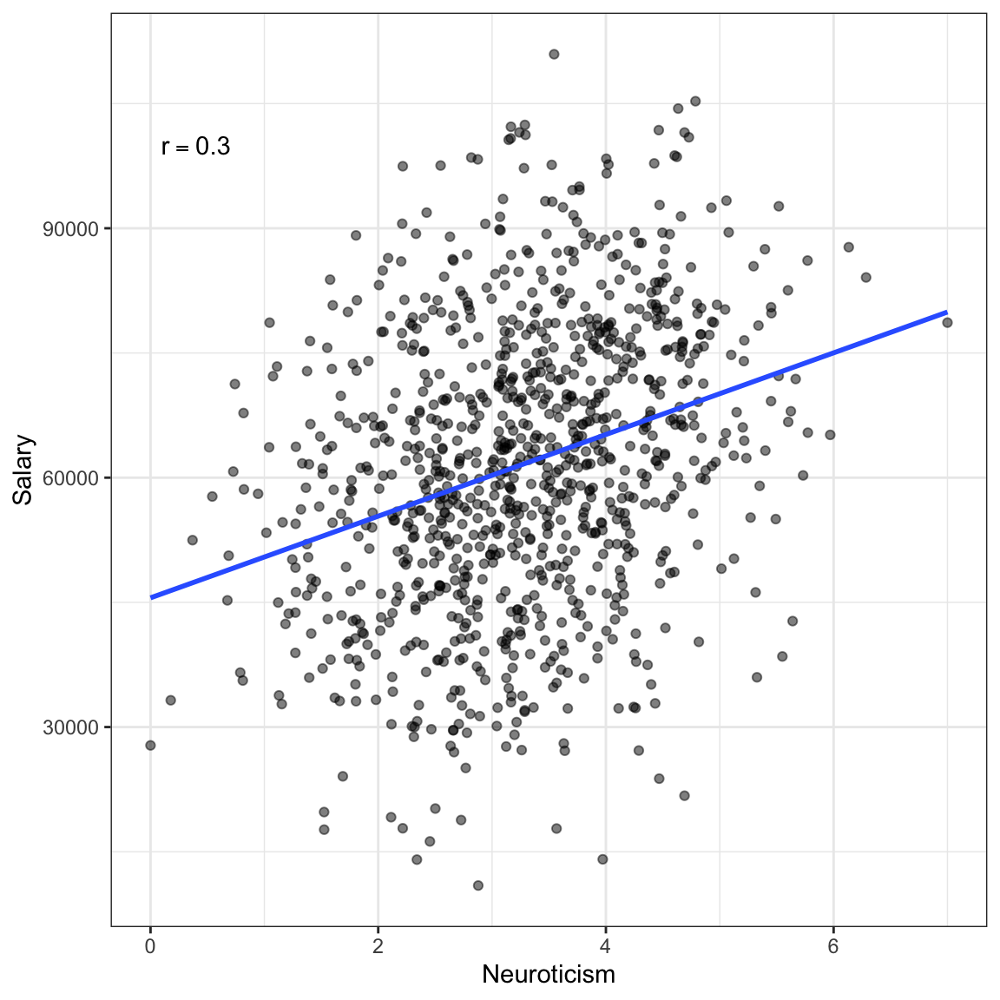
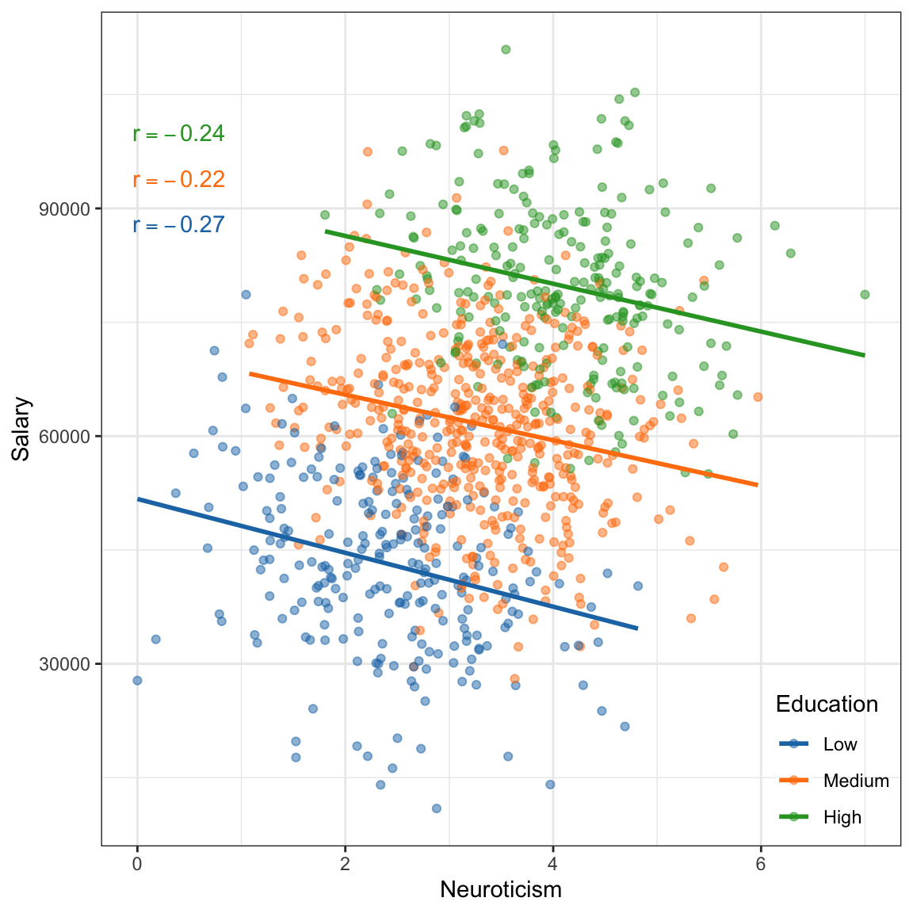
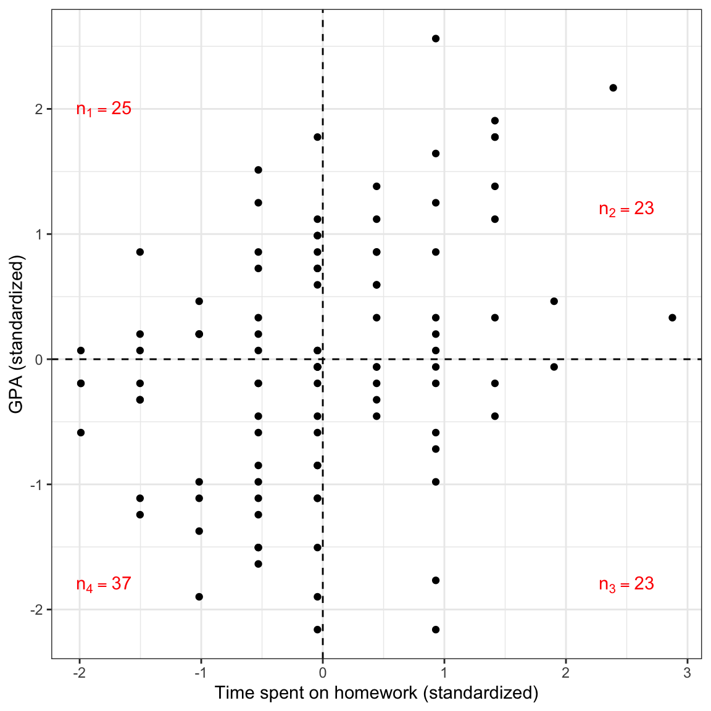
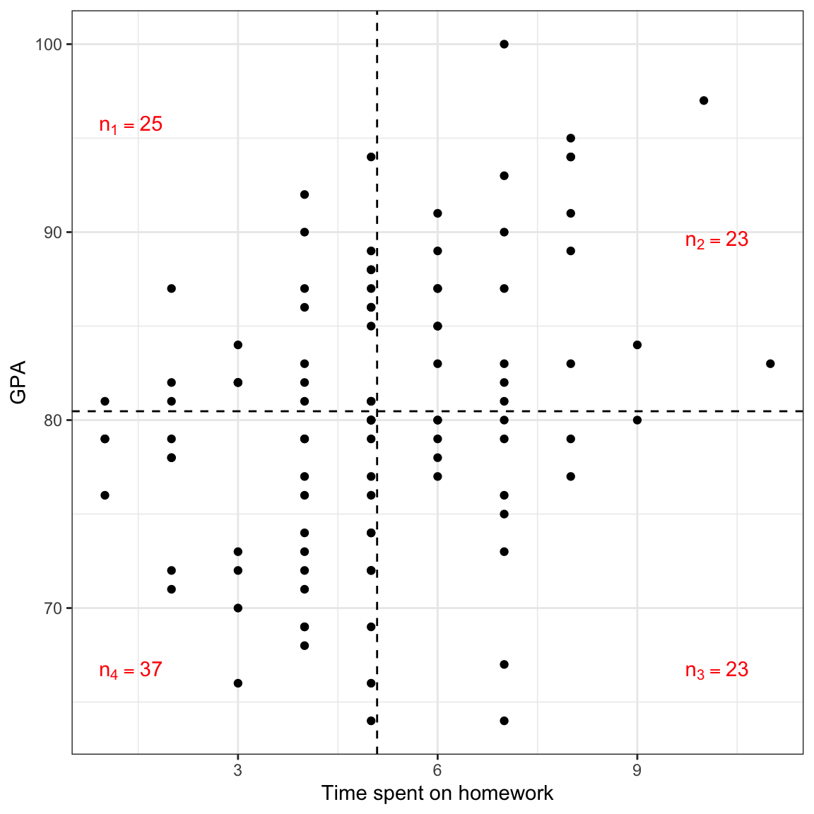
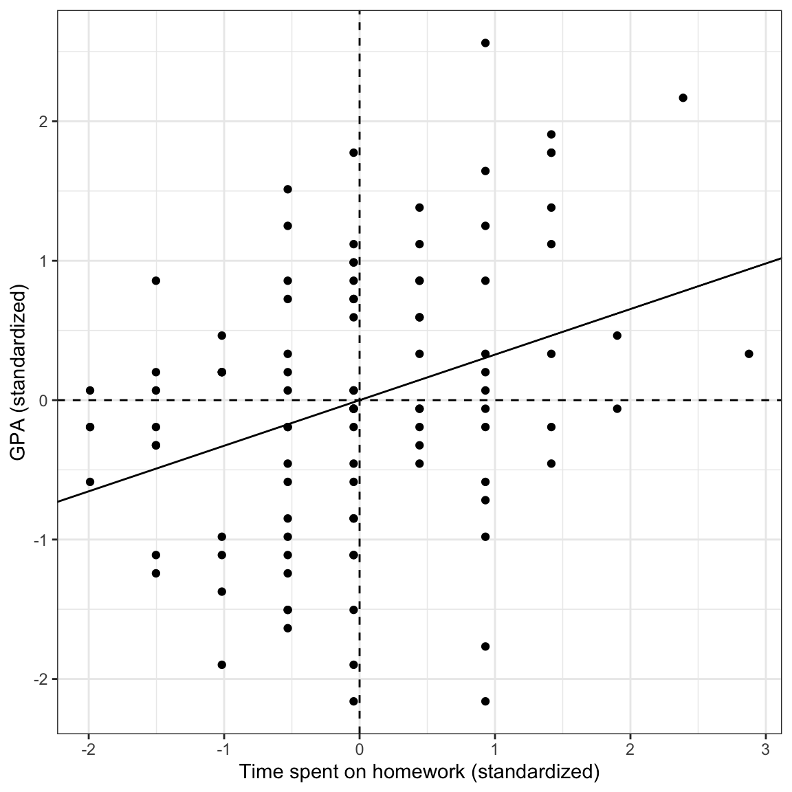

# Load libraries
library(corrr)
library(dplyr)
library(ggplot2)
library(readr)
# Import data
keith = read_csv(file = "https://raw.githubusercontent.com/zief0002/modeling/main/data/keith-gpa.csv")
# View data
keith8 Correlation and Standardized Regression
In this chapter, you will learn about correlation and its role in regression. To do so, we will use the keith-gpa.csv data to examine whether time spent on homework is related to GPA. The data contain three attributes collected from a random sample of \(n=100\) 8th-grade students (see the data codebook). To begin, we will load several libraries and import the data into an object called keith.
8.1 Data Exploration
We begin by looking at the marginal distributions of both time spent on homework and GPA. We will also examine summary statistics of these variables (output presented in Table 8.1). Finally, we also examine a scatterplot of GPA versus time spent on homework. (Note that the syntax is not shown.)



| Measure | M | SD |
|---|---|---|
We might describe the results of this analysis as follows:
The marginal distributions of GPA and time spent on homework are both unimodal. The average amount of time these 8th-grade students spend on homework each week is 5.09 hours (SD = 2.06). These 8th-grade students have a mean GPA of 80.47 (SD = 7.62) on a 100-pt scale. There is a moderate, positive, linear relationship between time spent on homework and GPA for these students. This suggests that 8th-grade students who spend less time on homework tend to have lower GPAs, on average, than students who spend more time on homework.
8.2 Correlation
To numerically summarize the linear relationship between variables, we typically compute correlation coefficients. The correlation coefficient is a quantification of the direction and strength of the relationship. (It is important to note that the correlation coefficient is only an appropriate summarization of the relationship if the functional form of the relationship is linear.)
To compute the correlation coefficient, we use the correlate() function from the {corrr} package. We can use the dplyr-type syntax to select the variables we want correlations between, and then pipe that into the correlate() function. Typically the response (or outcome) variable is the first variable provided in the select() function, followed by the predictor.
# Compute correlation between GPA and time spent on HW
keith |>
select(gpa, homework) |>
correlate()When reporting the correlation coefficient between variables it is conventional to use a lower-case r and report the value to two decimal places.1 Subscripts are also generally used to indicate the variables. For example,
\[ r_{\mathrm{GPA,~Homework}} = 0.33 \]
It is important to keep in mind this value is only useful as a measure of the strength of the relationship when the relationship between variables is linear. Here is an example where the correlation coefficient would be misleading about the strength of the relationship.

Here there is a perfect relationship between day of the year and hours of daylight. If you fitted a nonlinear model here, your “line” would match the data exactly (no residual error!). But the correlation coefficient does not reflect that (\(r=-0.34\)).
You should always create a scatterplot to examine the relationship graphically before computing a correlation coefficient to numerically summarize it.
Another situation in which correlation can mislead is when you have subpopulations in your data. Here is an example of that.


If we treat these data as one population (an assumption for using the correlation) the relationship between neurotocism and salary is positive; employees who are more neurotic tend to have higher salaries, on average. However, if we account for education level, the relationship between neurotocism and salary is negative for each of the education levels; once we account for education level, employees who are more neurotic tend to have lower salaries, on average. This reversal of the direction of the relationship once we account for other variables is quite common (so common it has a name, Simpson’s Paradox) and makes it difficult to be sure about the “true” relationship between variables in observational data.
8.3 Understanding Correlation
There are many equivalent computational formulas for calculating the correlation coefficient. Each of these were useful in the days when we needed to hand-calculate the correlation. In practice, we now just use the computer to calculate the value of the correlation coefficient. That being said, some of these formulas are useful in helping us better understand what the correlation coefficient is measuring. Below is one such expression:
\[ r_{xy} = \frac{1}{n-1}\sum_{i=1}^n\bigg(\frac{x_i - \bar{x}}{s_x}\bigg)\bigg(\frac{y_i - \bar{y}}{s_y}\bigg) \]
where, n is the sample size; \(x_i\) and \(y_i\) are the values for observation i of the variables x and y, respectively; \(\bar{x}\) and \(\bar{y}\) are the mean values for the variables x and y, respectively; and \(s_x\) and \(s_y\) are the standard deviations for the variables x and y, respectively.
Note that the terms in the parentheses are the z-scores for the x- and y-values for a particular observation. Thus, this formula can be re-written as:
\[ r_{xy} = \frac{1}{n-1}\sum_{i=1}^n\bigg(z_{xi}\bigg)\bigg(z_{yi}\bigg) \]
This formula essentially says, multiply the z-scores of x and y together for each observation; add them together, and divide by the sample size.2 Adding things together and dividing by the sample size is the way we calculate an average. The correlation coefficient is an average of sorts! It is essentially the average product of the z-scores.
As we consider the product of the z-scores for x and y, recall that the z-score gives us information about how many standard deviations an observation is from the mean. Moreover, it gives us information about whether the observation is above the mean (positive z-score) or below the mean (negative z-score). Consider an observation that has both an x-value and y-value above the mean. That observation’s product would be positive.
\[ \begin{split} \mathrm{\scriptsize +} z_{x_i} &\times \mathrm{\scriptsize +} z_{y_i} \\ \mathrm{positive~number} &\times \mathrm{positive~number} \end{split} \]
This would also be true for an observation that has both an x-value and y-value below the mean.
\[ \begin{split} -z_{x_i} &\times -z_{y_i} \\ \mathrm{negative~number} &\times \mathrm{negative~number} \end{split} \]
Observations the are above the mean on one variable and below the mean on the other would have a negative product. Here is a plot of the standardized GPA versus the standardized time spent on homework for the 100 observations. The mean values are also displayed.

In this case there more observations having a positive product of z-scores than a negative product of z-scores. This suggests that the sum of all of these products will be positive; the correlation coefficient will be positive.3
Conceptually, that sum of products of z-scores in the formula for the correlation coefficient gives us an indication of the patterns of deviation from the mean values of x and y for the propensity of the data. The division by \(n-1\) serves to give us an indication of the magnitude of the “average” product. This is why we interpret positive and negative relationships the way we do; a positive relationship suggests that higher values of x are typically associated with higher values of y and that lower values of x are typically associated with lower values of y. (Note that the words “higher” and “lower” in that interpretation could more accurately be replaced with “values above the mean” and “values below the mean”, respectively.)
When we say the direction of the relationship is positive, we statistically mean that the average product of z-scores is positive, which means that the propensity of the data has values of both variables either above or below the mean.
Of course, we don’t have to use z-scores to see this pattern, afterall we typically look at a scatterplot of the unstandardized values to make this interpretation.

Converting to z-scores is only useful to remove the metrics from the unstandardized values and place them on a common scale. This way values of the correlation coefficient are not dependent on the scales used in the data. This is why we do not put a metric on the correlation coefficient (e.g., it is just 0.30, not 0.30 feet).
8.4 Correlation’s Relationship to Regression
The correlation coefficient and the slope of the regression line are directly related to one another. Mathematically, the estimated slope of the simple regression line can be computed as:
\[ \hat\beta_1 = r_{xy} \times \frac{s_y}{s_x} \]
where, \(s_x\) and \(s_y\) are the standard deviations for the variables \(x\) and \(y\), respectively, and \(r_{xy}\) is the correlation between \(x\) and \(y\). If we are carrying out a regression analysis, there must be variation in both \(x\) and \(y\), which implies that both \(s_x\) and \(s_y\) are greater than 0. This in turn implies that the ratio of the standard deviations (the second term on the right-hand side of the equation) is also a positive number. This means the sign of the slope is completely dependent on the sign of the correlation coefficient. If \(r_{xy}>0\) then \(\hat\beta_1>0\). If \(r_{xy}<0\) then \(\hat\beta_1<0\).
The magnitude of the regression slope (sometimes referred to as the effect of \(x\) on \(y\)) is impacted by three factors: the magnitude of the correlation between \(x\) and \(y\), the amount of variation in \(y\), and the amount of variation in \(x\). In general, there is a larger effect of \(x\) on \(y\) when:
- There is a stronger relationship (higher correlation; positive or negative) between x and y;
- There is more variation in the outcome; or
- There is less variation in the predictor.
8.5 Standardized Regression
In standardized regression, the correlation plays a more obvious role. Standardized regression is simply regression performed on the standardized variables (z-scores) rather than on the unstandardized variables. To carry out a standardized regression:
- Standardize the outcome and predictor(s)
- Fit a model by regressing \(z_y\) on \(z_x\)
Here we will perform a standardized regression on the Keith data.
# Standardize the outcome and predictor
keith = keith |>
mutate(
z_gpa = (gpa - mean(gpa)) / sd(gpa),
z_homework = (homework - mean(homework)) / sd(homework),
)
# View updated data
head(keith)# Fit standardized regression
lm.z = lm(z_gpa ~ 1 + z_homework, data = keith)
lm.z
Call:
lm(formula = z_gpa ~ 1 + z_homework, data = keith)
Coefficients:
(Intercept) z_homework
7.627e-17 3.274e-01 The fitted regression equation is:
\[ \hat{z}_{\mathrm{GPA}_i} = 0 + 0.327(z_{\mathrm{Homework}_i}) \]
The intercept in a standardized regression is always 0.4 Notice that the slope of the standardized regression is the correlation between the unstandardized variables. If we interpret these coefficients:
- The predicted mean standardized GPA for all students who have a standardized value of homework of 0 is 0.
- Each one-unit difference in the standardized value of homework is associated with a 0.327-unit difference in predicted standardized GPA.
Remember that standardized variables have a mean equal to 0 and a standard deviation equal to 1. Using that, these interpretations can be revised to:
- The predicted mean GPA for all students who spend the mean amount of time on homework is the mean GPA.
- Each one-standard deviation difference in time spent on homework is associated with a 0.327-standard deviation difference in predicted GPA.
Here is a scatterplot of the standardized variables along with the fitted standardized regression line. This will help you visually see the results of the standardized regression analysis.
ggplot(data = keith, aes(x = z_homework, y = z_gpa)) +
geom_point() +
theme_bw() +
xlab("Time spent on homework (standardized)") +
ylab("GPA (standardized)") +
geom_hline(yintercept = 0, linetype = "dashed") +
geom_vline(xintercept = 0, linetype = "dashed") +
geom_abline(intercept = 0, slope = 0.327)
Using standardized regression results allows us to talk about the effect of \(x\) on \(y\) in a standard metric (standard deviation difference). This can be quite helpful when the unstandardized metric is less meaningful. This is also why some researchers refer to correlation as an effect, even though the value of \(R^2\) is more useful in summarizing the usefulness of the model. Standardized regression also makes the intercept interpretable, since the mean value of \(x\) is not extrapolated.
8.5.1 A Slick Property of the Regression Line
Notice from the previous scatterplot of the standardized regression results that the standardized regression line goes through the point \((0,0)\). Since the variables are standardized, this is the point \((\bar{x}, \bar{y})\). The regression line will always go through the point \((\bar{x}, \bar{y})\) even if the variables are unstandardized. This is an important property of the regression line.
We can show this property mathematically by predicting \(y\) when \(x\) is at its mean. The predicted value when \(x=\bar{x}\) is then
\[ \hat{Y}_i = \hat\beta_0 + \hat\beta_1(\bar{x}) \]
Using a common formula for the regression intercept,
\[ \hat\beta_0 = \bar{y} - \hat\beta_1(\bar{x}), \]
and substituting this into the prediction equation:
\[ \begin{split} \hat{Y}_i &= \hat\beta_0 + \hat\beta_1(\bar{x}) \\ &= \bar{y} - \hat\beta_1(\bar{x}) + \hat\beta_1(\bar{x}) \\ &= \bar{y} \end{split} \]
This implies that \((\bar{x}, \bar{y})\) is always on the regression line and that the predicted value of \(y\) for \(x\)-values at the mean is always the mean of \(y\).
8.5.2 Variance Accounted For in a Standardized Regression
The \(R^2\) value for the standardized and unstandardized regression models are identical. That is because the correlation between \(x\) and \(y\) and that between \(z_x\) and \(z_y\) are identical (see below). Thus the squared correlation will also be the same, in this case \(R^2 = 0.327^2 = 0.107\).
keith |>
select(z_gpa, z_homework) |>
correlate()We can also compute \(R^2\) as the proportion reduction in error variation (PRE) from the intercept-only model. To do so we again compute the sum of squared error (SSE) for the standardized models (intercept-only and intercept-slope) and determine how much variation was explained by including the standardized amount of time spent on homework as a predictor.
Remember that the intercept-only model is referred to as the marginal mean model—it predicts the marginal mean of \(y\) regardless of the value of \(x\). Since the variables are standardized, the marginal mean of \(y\) is 0. Thus the equation for the intercept-only model when the variables are standardized is:
\[ \hat{z}_{\mathrm{GPA}} = 0 \]
You could also fit the intercept-only model to obtain this result, lm(z_gpa ~ 1, data = keith). We can now compute the SSE based on the intercept-only model.
# Compute the SSE for the standardized intercept-only model
keith |>
mutate(
y_hat = 0,
errors = z_gpa - y_hat,
sq_errors = errors ^ 2
) |>
summarize(
SSE = sum(sq_errors)
)We also compute the SSE for the standardized model that includes the standardized predictor of time spent on homework.
# Compute the SSE for the standardized slope-intercept model
keith |>
mutate(
y_hat = 0 + 0.327 * z_homework,
errors = z_gpa - y_hat,
sq_errors = errors ^ 2
) |>
summarize(
SSE = sum(sq_errors)
)The proportion reduction in SSE is:
\[ R^2 = \frac{99 - 88.39}{99} = 0.107 \]
We can say that differences in time spent on homework explains 10.7% of the variation in GPAs, and that 89.3% of the varition in GPAs remains unexplained. Note that if we compute the SSEs for the unstandardized models, they will be different than the SSEs for the standardized models (after all, they are in a different metric), but they will be in the same proportion, which produces the same \(R^2\) value.
8.6 Correlation Between Observed Values, Fitted Values, and Residuals
Here we examine a correlation matrix displaying the correlations between:
- The observed values (\(y_i\)) and the fitted values (\(\hat{y}_i\)),
- The observed values (\(y_i\)) and the residuals (\(e_i\)), and
- The fitted values and the residuals.
It doesn’t matter whether you use the unstandardized or standardized regression model here, but to illustrate, we will use the unstandardized model.
keith |>
mutate(
y_hat = 74.290 + 1.214 * homework,
errors = gpa - y_hat
) |>
select(gpa, y_hat, errors) |>
correlate()The first correlation between the observed values and the fitted values is 0.327. This is the same as the correlation between x and y. This is because the fitted values are just a linear transformation of x. In other words, the fitted values have the same relationship with y as x has with y. Note that if we square this value we get the \(R^2\) value for the model. So another way of computing \(R^2\) is to square the correlation between y and \(\hat{y}\).
\[ R^2 = (r_{y,\hat{y}})^2 \]
The second correlation between the observed values and the residuals is 0.945. This is the value you get if you take the unexplained amount of variation from the model (0.893) and take its square root. Thus it gives us an indication of the unexplained variation in the model.
\[ 1 - R^2 = (r_{y,e})^2 \]
The last correlation between the fitted values and the residuals is 0. That is because the regression model assumes that the errors are independent of the fitted values. We have pulled out all of the information related to x out of the observed y-values (the fitted values) and what is left over is completely unrelated to x (the residuals). When a correlation is 0, statisticians say they two variables are independent of one another. Thus the fitted values and the residuals are said to be independent of one another.
\[ r_{\hat{y},e} = 0 \]
The correlation coefficient between observed outcome values and model predicted values uses an upper-case \(R\) rather than the lower-case r.↩︎
Technically divide by the total degrees of freedom, but for large values of n this difference is minor.↩︎
The sum also depends on the magnitude of the products. For example, if the magnitude of each the negative products is much higher than that for each of the positive products, the sum will be negative despite more positive products.↩︎
R or other statistical software might round this to a very small number. The intercept should always be reported as zero, or dropped from the fitted equation.↩︎